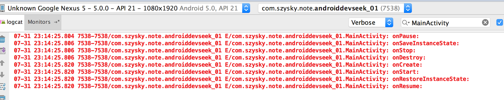
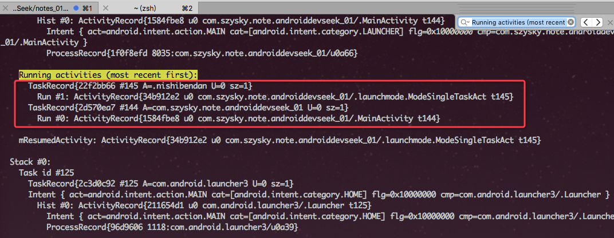
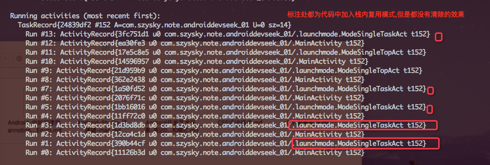

第一章: Activity的启动模式详解,与Intent-filter的匹配
Activity的生命周期

- onCreate: 声明周期的第一个方法.做一些初始化的动作,例如setContentView
- onRestart: 表示Activity重新启动.当界面从不可见变为可见时调用,场景Home键切换,从任务栈返回
- onStart: 表示Activity正在被启动.Activity为理论可见(取决上层界面是否透明),但不是前台无法操作.
- onResume: 表示Activity已经可见,并且为前台. 与onStart主要是前台后台,有无焦点的区别
- onPause: 表示Activity正在停止. 做一些存储数据,停止动画操作.不能太耗时,这会影响新的Activity启动,onPause()必须先执行完,新Activity的onResume()才会执行.
- onStop: 表示Activity即将停止,可以做稍微重量级的回收工作,同样不能太耗时.
- onDestroy: 表示Activity即将被销毁. 可以做一些最终的资源释放
场景 当界面A打开界面B时的生命周期调用顺序: A的onPause()-> B的onCreate() -> B的onStart() -> B的onResume() -> A的onStop().
onStart()和onStop()是针对Activity是否可见的角度回调onResume()和onPause()是针对Activity是否位于前台的角度回调的
异常情况下的生命周期
当系统配置发生改变的时候
Activity就会因为异常情况被销毁并重新创建.例如横竖屏切换,语言切换等.
当异常状态发生的时候. 在界面销毁前会调用onSaveInstanceState()进行当前界面的数据保存,如文本输入的数据,listView滚动的位置等. 在重建后会调用onRestoreInstanceState()进行因为异常重建的原始数据的恢复.
准确的说onSaveInstanceState() 会在onStop()之前执行, 而onRestoreInstanceState会在onStart之后执行.
当屏幕发生旋转时,声明周期调用过程如下:

这里我们要清楚,当发生了异常情况下,系统会帮我们自动恢复大部分的数据,但是如果我们想要自己从异常中恢复.那么我们可以通过onCreate()和onRestoreInstanceState()中的参数Bundle来进行值得保存.
- 当正常情况下onCreate中的
Bundle类型参数是为null的. 而onRestoreInstanceState是不会被调用的. - 当异常发生后的重建,onCreate,onRestoreInstanceState都会被触发,并且其中的Bundle类型参数都不为null
资源内存不足时低优先级的Activity被杀死
这种场景不好模拟,但是在存储和恢复的过程是与上面的过程一致的.
关于Activity的优先级的高低
- 前台Activity–正在和用户交互的Activity,优先级最高
- 可见但是非前台Activity–比如Activity中弹出了一个对话框,导致Activity可见但是无法操作.
- 后台Activity–已经被暂停的Activity,比如执行了onStop,优先级最低.
禁止异常重建Activity
如果不想Activity重建.可以通过清单文件中对activity标签进行配置.
android:configChanges="orientation|screenSize" |
当给一个Activity声明了上述的属性之后,当手机旋转的时候,activity不会重建,也就没有任何声明周期方法的回调, 但是会调用onConfigurationChanged()方法.
- orientation: 屏幕方向发生了改变,手机旋转
- screenSize: 屏幕的尺寸信息发生改变,此属性和编译版本有关系,当minSdkVersion和targetSdkVersion均低于13,此选项不会导致界面重启.如果高于那么会重启.
所以这两个最好成对出现.
日常开发中我们比较常用的local,orientation,keyboardHidden,uiMode. local为本地语言切换. uiMode界面模式发生切换,如夜间模式(API8中增加)
Activity的启动模式
当我们打开的activity会被系统以任务栈的形式来存储起来.后进先出.当每一个任务栈为空的时候这个栈就会被回收
- standard: 默认模式,就是新进入的压在已存在的界面之上.
- singleTop: 栈顶复用模式.
- singleTask: 栈内复用模式
- singleInstance: 栈内单例模式
singleTop
如果新Activity已经位于任务栈的栈顶,那么此Activity不会被重新创建,同时onNewIntent()会被回调.
如果使用此模式,那么在任务栈中栈顶到栈低为CBA的情况下,再次打开C,那么C界面的onCreate()和onStart()不会被调用,真正的调用时onPause()–>onNewIntent()–>onResume()
singleTask
如果用栈内复用,当打开C时候,会查询所有的任务栈,如果有任务栈包含C,那么把这个任务栈移动到所有栈的首位,并清除掉这个栈内C到栈顶的其他Activity,最后调用C的onNewIntent()方法. 如果没有那就直接在所需任务栈的栈顶创建C的实例.
这里由于singleTask默认具有clearTop的效果,所以会清除C以上activity的出栈. 这里和具体的启动模式有关.
所需任务栈: 和一个参数有关系,TaskAffinity.这个参数标识了一个Activity所需要的任务栈的名字,默认情况下所有的Activity的所需的任务栈的名字都为应用包名.
这里我们可以通过命令adb shell dumpsys activity测试一下,打开顺序为MainActivity–>ModeSingleTopArc
当我们不指定taskAffinity的所需栈的时候,查看任务栈的结果为:

如果指定了taskAffinity 这个时候任务栈的状况为:
<activity android:name=".launchmode.ModeSingleTaskAct" |

一般情况下TaskAffinity属性一般和singleTask启动模式或者allowTaskReparenting属性配对使用,其他情况下使用没有意义. 另外任务栈分为前台任务栈和后台任务栈,后台任务栈中的activity属于暂停状态,用户可以切换将后台调到前台.
singleInstance
这个模式是加强版的singleTask,除了singleTask具有的属性之外,还具有创建新栈的能力,这个栈只有这一个实例. 就是说如果假设EActivity没有被创建过,那么创建时,首先会创建一个新的任务栈,然后创建实例放入这个新的栈内,然后下一个实例不会和这个EActivity所属栈共存,会创建一个新的栈继续存放.
给Activity添加启动模式
- 通过清单文件中
activity标签添加android:launchMode="singleTask|singleTop|singleInstance" - 通过代码中startActivity(Intent)中的intent通过
addFlags(Intent.FLAG_ACTIVITY_NEW_TASK)
优先级 代码设置优先于xml布局中的设置.
限定范围不同
- xml无法直接为其设置
FLAG_ACTIVITY_CLEAR_TOP. - 代码添加flag无法添加
singleInstance模式.
注意: 如果通过代码添加添加Intent.FLAG_ACTIVITY_NEW_TASK和xml中设置singleTask是不一样的.代码动态添加是没有clean_top的效果,看图:

Activity的Flags
影响启动模式的标识位: 可以设定Activity的启动模式
影响运行时的标识位: 可以影响运行的Activity的运行状态
FLAG_ACTIVITY_NEW_TASK相对于xml中的singleTask,但是动态的时候需要给intent添加两个标志位,否则无法达到效果,如下
intent3.addFlags(Intent.FLAG_ACTIVITY_NEW_TASK); |
FLAG_ACTIVITY_SINGLE_TOP相对于xml中的singleTopFLAG_ACTIVITY_CLEAR_TOP在同一个任务栈中所有位于它上面的Activity都要出栈,此标志一般和singleTask一起出现. 如果启动模式为standard它连同上面的都要出栈,之后系统会创建一个新的实例放入栈顶.
IntentFilter匹配规则
- 显示调用: 需要指定组件信息如包名,类名.
- 隐式调用: 不需要指定组件信息, Intent需要匹配目标组件IntentFilter中所设置的过滤信息即可.
IntentFilter的过滤信息有action,category,data. 一个Activity可以有多个Intentfilter,只要intent能匹配任意一组intent-filter即可成功启动.
关于每一项的具体匹配规则
- action: 本身是字符串. Intent匹配中存在action且必须和过滤规则中的其中一个action相同,那么action就算匹配ok. xml中必须有一个action声明.
- category: 本身是字符串.Intent匹配中intent可以不存在category,但是如果添加了category那么必须要和定义的
intent-filter中的category一致,否则失败. 如果我们在Intent不添加的时候,那么系统会自动为我们添加一个预定义的属性android.intent.category.DEFAULT. xml中需添加这个默认的category属性. - data: xml过滤规则中可以不声明,如果声明只要匹配了一个就可以.一般情况下data有两部分组成mimeType和URI. mimeType指媒体类型,URI规则如下:
<scheme>://<host>:<port>/[path]
如下实例: scheme:表示URI的模式,例如http, file, content.
http://www.baidu.com:80/search/info
最简单的隐式打开
//代码中 |
一个比较完整的匹配代码
//代码中 |
在进行data属性匹配的时候尽量使用setDataAndType, 因为源码中setData和setType会把彼此属性置为null.
Intent-filter匹配规则对于Service和BroadcastReceiver也是同样. 不过建议Service的使用尽量使用显示调用服务.
判断是否有匹配的Intent
- PackageManager的
resolveActivity()方法 - Intent的
resolveActivity()方法
使用演示:
ResolveInfo resolveInfo = getPackageManager().resolveActivity(intent, PackageManager.MATCH_DEFAULT_ONLY); |
参数二使用PackageManager.MATCH_DEFAULT_ONLY,意义在仅仅匹配哪些在intent-filter中声明 <category android:name="android.intent.category.DEFAULT"/>,只要使用这个标记不返回null,那么startActivity就一定可以打开. 如果不用这个标记就会把没有设置default的匹配出来.从而导致判断失败.因为不含有DEFAULT这个category的Activity是无法接收隐式Intent的
这样如果返回的为null,那就是没有匹配到,如果不为null那就是可以匹配.
下一章: IPC机制